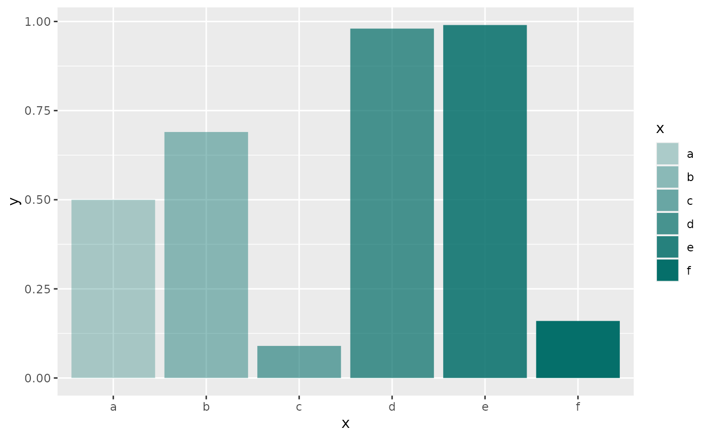
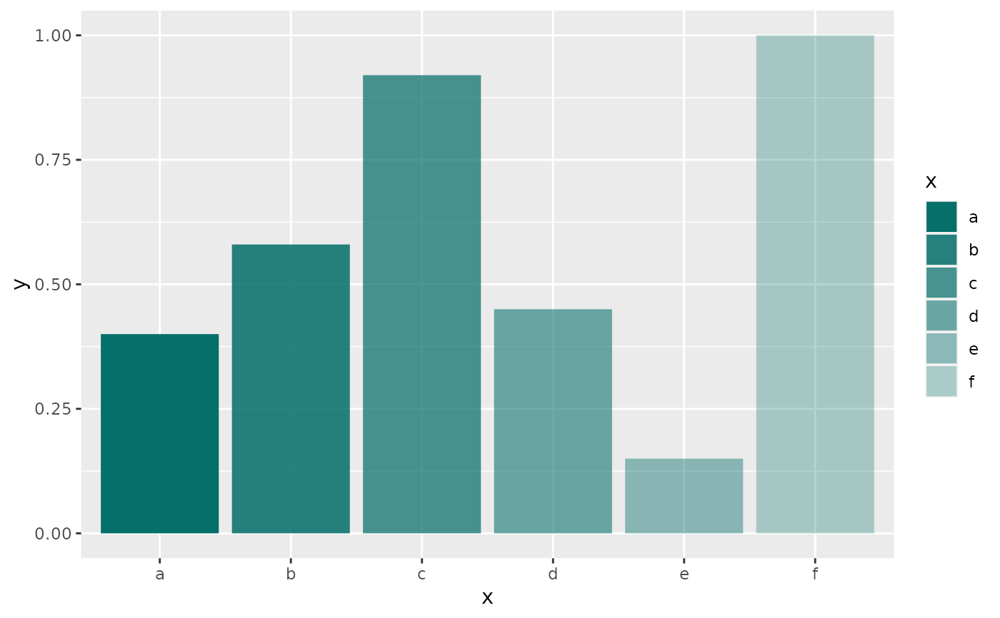

Get a pallete of the same color with different transparencies
color_pallette_alpha.RdSometimes a variable has more categories than colors in ksnet functions.
To deal with this situation this function returns a vector of n colors
with progressive transparency.
Argumentos
- color
a hex color, for example, #00b2a9
- n
the number of new colors. Not necessary if values are specified.
- values
Optional. Name of the labels.
- rev
Optional. Reverse order.
- min_alpha
Minimal transparency. Default is 0.3.
- max_alpha
Maximum transparency. Default is 1.
Valor
A vector of colors with progressive transparency. If values are supplied it is returned a named vector.
Ejemplos
df <- data.frame( x = factor(letters[1:6]),
y = round( runif(6),2 ) )
color <- ksnet::paletas_ksnet$classic[5] # "#056F6A"
(col_x <- color_pallette_alpha( color, values = levels(df$x) ))
#> a b c d e f
#> "#056F6A4D" "#056F6A70" "#056F6A94" "#056F6AB8" "#056F6ADB" "#056F6AFF"
library(ggplot2)
ggplot( df, aes( x, y, fill = x ) )+
geom_col()+
scale_fill_manual( values = col_x )

# reverse color order:
(col_x_rev <- color_pallette_alpha( color, values = levels(df$x),rev = TRUE ))
#> a b c d e f
#> "#056F6AFF" "#056F6ADB" "#056F6AB8" "#056F6A94" "#056F6A70" "#056F6A4D"
ggplot( df, aes( x, y, fill = x ) )+
geom_col()+
scale_fill_manual( values = col_x_rev )

## Using 'n' parameter
color_pallette_alpha( color, n = 10 )
#> [1] "#056F6A4D" "#056F6A60" "#056F6A74" "#056F6A88" "#056F6A9C" "#056F6AB0"
#> [7] "#056F6AC3" "#056F6AD7" "#056F6AEB" "#056F6AFF"